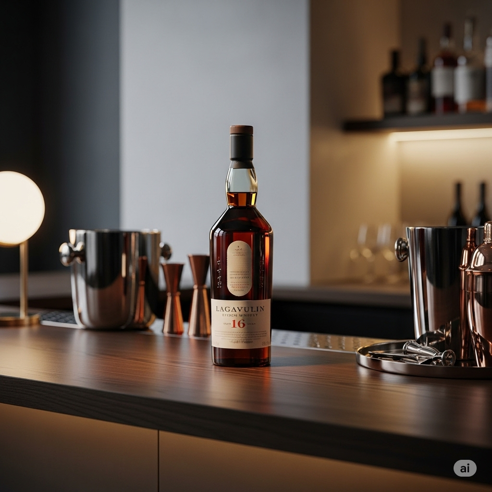

Lagavulin 16 Year Old
Origin: Islay, Scotland
Lagavulin 16 is legendary among peat lovers. Its intense smoky aroma, rich dried fruit, and long, elegant finish make it a whisky to savor. For those who crave bold, unforgettable flavor!
Signature Serve: Lagavulin Neat
- 50ml Lagavulin 16 Year Old
- Optional: a splash of water
Instructions: Pour Lagavulin into a whisky glass. Add a splash of water to open up the smoky, peaty notes, or enjoy neat for the full Islay experience.